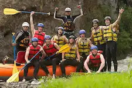
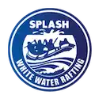
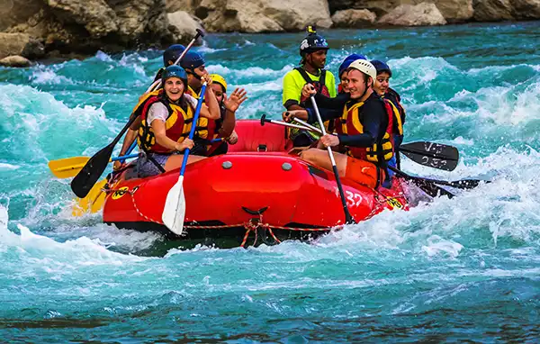

Nile River Explorers focus on providing our clients with an all inclusive experience of the Nile



Nile River Explorers focus on providing our clients with an all inclusive experience of the Nile
Inspired by that expedition, Jon Dahl stayed in Jinja and founded Nile River Explorers in the late 1990s. He deliberately named the company to echo the 19th-century spirit of discovery, turning the violent rapids just below Speke’s "Source of the Nile" into a commercial rafting route.